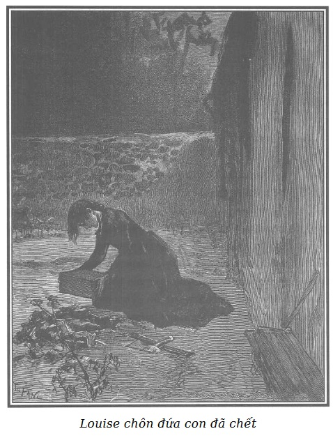

Rodolphe hỏi Louise:
- Thế cái người giấu mình trong phòng trò chuyện với lão là ai?
- Thưa ông, cháu không biết, cháu không nhận ra giọng nói ấy.
- Thế họ nói những gì với nhau?
- Có lẽ cuộc trò chuyện đã kéo dài trước đó, bởi vì cháu chỉ nghe được thế này: “Không gì đơn giản hơn, - người ấy nói - một kẻ vô ơn tên là Cánh Tay Đỏ, buôn lậu có hạng, đã giới thiệu tôi với một gia đình cướp sông về việc tôi nói với ông lúc nãy, gia đình này trú ngụ ở một đảo nhỏ gần Asnières. Đấy là hai tên kẻ cướp lớn nhất trên đất liền, cha và ông đều bị chết trên máy chém, hai trong mấy đứa con trai đã bị kết án khổ sai chèo thuyền chung thân, nhưng còn ba đứa con trai và hai đứa con gái ở nhà với mẹ, cả bọn, đứa nào cũng gian ác như nhau. Người ta kể chuyện là ban đêm, chúng ăn trộm trên hai bờ sông Seine, đôi khi chúng cho tàu chạy xuôi xuống tận miền Bercy. Đó là những tên có thể giết những người chúng gặp chỉ vì một đồng écu. Nhưng chúng tôi không cần họ, miễn là họ cho cái nhà bà ở tỉnh lẻ của ông đến trú ngụ. Dưới mắt bà ta, nhà Martial (đó là tên bọn cướp tôi vừa nói) sẽ là một gia đình dân chài lương thiện. Tôi sẽ thay mặt ông tới thăm người đàn bà trẻ tuổi ấy vài ba lần, tôi sẽ chỉ dẫn cho bà ấy cách uống một vài thứ thuốc nước. Và chỉ khoảng tám ngày, bà ta sẽ là khách của nghĩa địa Asnières thôi. Ở nơi xóm làng thì chuyện có người chết cũng coi như chuyện gửi một lá thư ở bưu điện, trong khi đó ở Paris thì người ta lại quá chú ý đến nó. Nhưng đến khi nào thì ông đưa người đàn bà tỉnh lẻ ấy đến đảo Asnières để tôi có thì giờ báo trước cho gia đình Martial biết nhiệm vụ của họ là gì?” - “Ngày mai bà ta sẽ đến đây, và ngày kia bà ta sẽ đến nhà Martial, - lão Jacques Ferrand nói tiếp - và tôi sẽ báo cho bà ta biết là bác sĩ Vincent sẽ thay mặt tôi đến chăm sóc bà ta.” - “Đồng ý với tên bác sĩ Vincent, - tiếng nói kia trả lời - tôi thích cái tên này hơn là cái khác.”
Rodolphe càng lúc càng kinh ngạc, hỏi Louise:
- Câu chuyện bí mật mới về tội ác ô nhục ấy thế nào?
- Mới ư? Có phải thế đâu thưa ông, ông sẽ thấy nó gắn với một tội ác khác mà ông đã biết. - Louise trả lời. - Cháu nghe có tiếng đẩy ghế, cuộc đàm thoại thế là kết thúc. “Tôi không hỏi ông điều bí mật, - lão Ferrand nói - ông tin ở tôi cũng như tôi tin ở ông. Vì vậy chúng ta có thể giúp đỡ lẫn nhau và không bao giờ hại nhau.” Tiếng nói kia trả lời: “Ông thấy rõ nhiệt tình của tôi đấy. Nhận thư ông lúc mười giờ đêm qua, sáng nay tôi đã ở nhà ông rồi. Chào ông nhé, ông bạn chớ quên đảo Asnières, anh dân chài Martial và bác sĩ Vincent. Nhờ ba từ thần diệu đó, người đàn bà tỉnh lẻ của ông sẽ không qua được tám ngày.” - “Hãy đợi một chút, - lão Ferrand dặn - tôi sẽ mở then cửa và xem có ai trong phòng đợi để ông có thể đi ra phố nhỏ phía vườn như ông đã đi vào qua đường ấy.” Lão Ferrand đi ra một lúc, rồi trở vào và cháu nghe tiếng ông ta đi cùng với người mà cháu nghe tiếng. Ông rất hiểu rõ nỗi hoảng sợ của cháu, thưa ông, trong thời gian hai bên đàm thoại, và nỗi lo buồn của cháu, vì đã bất ngờ nghe được một câu chuyện bí mật như vậy. Hai giờ sau cuộc trò chuyện này, mụ Séraphin đến tìm cháu trong phòng, lúc đó cháu run rẩy và ốm yếu hơn trước rất nhiều. Bà ta bảo cháu: “Ông cho gọi cô đấy, cô thật may mắn, thôi xuống nhà đi! Người cô xanh xao lắm, điều ông chủ sắp nói sẽ làm cho cô khởi sắc đấy!” Cháu theo mụ Séraphin. Lão Ferrand đang ở trong phòng riêng. Trông thấy lão, tự nhiên cháu rùng mình, tuy nhiên lão ta có vẻ ít dữ tợn hơn ngày thường, lão chòng chọc nhìn cháu khá lâu, dường như muốn biết rõ những ý nghĩ của cháu. Cháu nhìn xuống. Lão ta hỏi: “Cô mệt lắm không?” - “Thưa ông, có.” - Cháu đáp lại, rất ngạc nhiên thấy ông ta không mày tao với cháu như ngày thường. “Rất đơn giản thôi, - ông ta nói thêm - đó là hậu quả của tình hình sức khỏe của cô và những cố gắng mà cô đã thực hiện để che giấu tình hình ấy. Nhưng mặc dầu những điều dối trá của cô, hạnh kiểm xấu của cô và sự tò mò của cô hôm qua, - ông ta nói thêm bằng giọng dịu dàng hơn - tôi vẫn thương hại cô. Vài ngày nữa cô sẽ không thể che giấu được là cô có thai. Mặc dù tôi đối xử với cô đúng như cô đáng phải chịu như thế trước cha xứ của giáo khu, một sự kiện như vậy trước mắt công chúng sẽ là điều đáng hổ thẹn trong nhà tôi, hơn nữa gia đình cô sẽ rất buồn phiền. Tôi đồng ý, trong trường hợp này, cứu giúp cho cô.” - “Ôi, thưa ông. - Cháu kêu lên. - Những lời nói nhân từ của ông làm tôi quên hết cả.” - “Quên cái gì? - Lão ta xẵng giọng.” - “Không gì cả, không có gì cả! Xin lỗi ông. - Cháu tiếp tục nói, sợ làm lão ta nổi giận và tin rằng lão ta có thiện ý với cháu.” - “Này, cô hãy nghe tôi, - lão ta lại nói - hôm nay cô sẽ về thăm cha cô, báo cho cha cô biết là tôi sẽ để cô về quê trông coi một cái nhà tôi vừa mới tậu, trong ba tháng. Trong thời gian cô không có ở đây, tôi sẽ gửi ông ấy tiền công của cô. Ngày mai, cô sẽ rời khỏi Paris, tôi sẽ trao cho cô một lá thư gửi gắm cô với bà Martial, bà mẹ của một gia đình dân chài lương thiện ở gần Asnières. Cô nhớ nói là cô ở tỉnh nhỏ lên và đừng thêm thắt gì nữa. Sau này cô sẽ rõ mục đích của sự gửi gắm này, tất cả chỉ là nhằm phục vụ lợi ích của cô thôi. Bà Martial sẽ coi cô như con. Một thầy thuốc trong số các bạn tôi, bác sĩ Vincent, sẽ đến chăm sóc cô, tùy tình hình sức khỏe của cô. Cô thấy tôi chu đáo với cô thế đấy!”
- Chà chà, âm mưu thật khủng khiếp! - Rodolphe chép miệng. - Bây giờ tôi mới hiểu rõ tất cả. Tin rằng hôm trước cô đã nắm được điều bí mật ghê gớm của lão, lão muốn thủ tiêu cô. Hẳn rằng lão thấy cần đánh lừa đồng bọn của lão bằng cách giới thiệu với tên kia cô là một người đàn bà tỉnh lẻ. Biết đề xuất ấy, chắc cô phải sợ mất mật.
- Việc này làm cháu choáng váng dữ dội, cháu thảng thốt, không nói nên lời, hãi hùng nhìn lão Ferrand, đầu óc mụ mẫm. Có thể cháu sẽ mất mạng nếu nói cho ông ta biết là sáng nay cháu đã nghe những điều lão ấn định, nhưng rất may là cháu nhớ ngay đến những mối nguy hiểm mà những lời nói này có thể đem lại cho cháu. Lão ta sốt ruột hỏi: “Cô không hiểu tôi sao?” - “Thưa ông, có chứ… Nhưng, - cháu vừa trả lời vừa run - tôi không muốn phải về quê.” - “Vì sao vậy? Cô sẽ được đối xử rất tốt ở nơi tôi sẽ gửi cô đến.” - “Không, không, tôi không đi! Tôi muốn ở lại Paris, tôi không muốn xa gia đình tôi, tôi muốn thú thật mọi việc với gia đình tôi rồi có chết vì hổ thẹn tôi cũng cam lòng.” - “Mày không nghe tao nói phải không? - Lão Ferrand nén giận và chăm chú quan sát cháu. - Tại sao mày lại đột ngột thay đổi ý kiến? Lúc nãy mày vừa nhận lời.” Cháu thấy rằng nếu ông ta đoán ra, cháu sẽ bị nguy hiểm nên trả lời rằng cháu biết đây là chuyện rời khỏi Paris, rời khỏi gia đình. “Nhưng mày làm nhục gia đình mày, đồ khốn nạn!” - Lão ta thét lên rồi không tự kiềm chế được, túm lấy tay cháu, xô cháu thật mạnh đến nỗi cháu ngã lăn ra. “Tao gia hạn cho mày đến ngày kia, - lão ta quát lên - ngày mai mày đi khỏi đây để đến nhà Martial hoặc về báo cho cha mày là tao đã đuổi mày, và cùng ngày cha mày sẽ vào tù.” Cháu ở lại một mình, nằm dài trên mặt đất, không còn sức gượng dậy được nữa. Mụ Séraphin thấy lão chủ to tiếng thì chạy đến. Nhờ mụ ta đỡ dậy, mỗi bước càng thêm mệt, cháu cũng gượng lê về đến phòng. Tới nơi, cháu nằm vật xuống giường và cứ nằm như thế đến tận đêm. Mấy chấn động đã làm cháu choáng váng dữ dội, vào khoảng một giờ sáng, những cơn đau ghê gớm làm cháu quằn quại, cháu cảm thấy là cháu sắp sinh đứa bé. Tội nghiệp. Đẻ non.
- Tại sao cô không gọi người đến cứu?
- Ôi, cháu đâu dám! Lão Ferrand đã muốn xóa sổ cháu, chắc chắn lão sẽ cho người đi tìm bác sĩ Vincent để giết cháu ở đây chứ không phải ở nhà Martial, hoặc là lão Ferrand sẽ bóp chết cháu, sau đó nói rằng cháu chết khi ở cữ. Than ôi, thưa ông, những nỗi lo sợ như vậy có thể là quá mức. Nhưng lúc ấy nó quăng quật cháu mà gây tai họa cho cháu. Nếu cháu bất chấp hổ thẹn, cháu đã không bị buộc tội giết con. Lẽ ra phải kêu cứu, nhưng sợ người ta nghe thấy, cháu đã phải cố nén tiếng kêu đau đớn bằng cách cắn chặt lấy tấm chăn. Cuối cùng, sau những cơn đau khủng khiếp, một mình trong bóng tối, cháu cho ra đời đứa trẻ tội nghiệp. Nó chết ngay vì bị đẻ non. Bởi vì cháu đâu có giết nó, trời ơi, cháu đâu có giết nó, trời ơi, cháu đâu có giết nó… Ồ không, giữa đêm hôm mà cháu cũng đã thấy một niềm vui cay đắng xót xa khi ôm ghì đứa bé vào lòng.
Và giọng nói của Louise bặt đi trong tiếng nức nở.
Bác Morel nghe con gái mình kể chuyện, lãnh đạm, dửng dưng, ủ ê, khiến cho Rodolphe phát hoảng. Vậy mà thấy con gái khóc như mưa như gió, vốn vẫn chống khuỷu tay tựa vào bàn ghế, hai bàn tay ôm lấy thái dương, bác thợ ngọc nhìn chòng chọc vào Louise mà nói:
- Nó khóc, nó khóc, nhưng tại sao nó khóc? - Rồi sau một lúc ngập ngừng, bác nói tiếp. - À, phải rồi, tôi biết, tôi biết rồi, tên chưởng khế… Con cứ nói tiếp đi, Louise tội nghiệp của bố. Con là con gái của bố. Bố luôn thương con. Lúc nãy, bố không nhận ra con nữa, nước mắt chan hòa tối lại. Ôi, trời ơi, trời ơi, đầu óc tôi, nó làm tôi đau đớn quá!
- Bố thấy rõ là con oan chứ, phải không, bố ơi?
- Đúng, đúng…
- Thật là một cái họa tày đình, chỉ vì con quá sợ lão chưởng khế đấy mà.
- Thằng chưởng khế, ối, bố tin con, thằng ấy tàn ác thật, tàn ác quá!
- Thế bây giờ bố có tha thứ cho con không?
- Có!
- Thật chứ bố?
- Thật, thật chứ! Ôi, bố luôn thương con! Đúng thế, mặc dầu bố không thể nói rằng… con thấy không, bởi vì… ôi, đầu óc bố… đầu óc bố…
Louise sợ hãi nhìn Rodolphe.
- Ông ấy đau khổ, cứ để ông ấy bình tâm dần. Cháu kể tiếp đi.
Lo lắng nhìn bố mình hai, ba lượt, Louise kể tiếp:
- Cháu ôm chặt lấy con mình. Cháu ngạc nhiên thấy nó không thở, nhưng cháu tự nhủ: sự hô hấp của đứa trẻ bé bỏng như thế, có thể khó nghe cho rõ, vả lại bên ngoài trời lạnh quá, cháu không thể thắp đèn được, người ta có bao giờ để đèn cho cháu đâu. Cháu phải đợi trời sáng, gắng làm thế nào cho cháu bé ấm lên. Nhưng cháu cảm thấy nó mỗi lúc một lạnh thêm. Cháu lại tự nhủ: trời lạnh quá, có thể vì lạnh nên em bé mới đờ đẫn ra như vậy. Lúc trời hửng sáng, cháu đưa con đến gần cửa sổ. Cháu nhìn nó. Nó cứng đờ. Lạnh buốt. Cháu áp chặt miệng nó để nghe hơi thở của nó. Cháu đặt tay lên ngực nó, tim nó không đập nữa… Nó chết rồi.
Và Louise òa khóc.
- Ôi! Lúc ấy trong cháu có một cái gì rất khó diễn tả. Cháu chỉ nhớ tất cả những việc xảy ra sau đó một cách mơ hồ, như trong một giấc mộng. Vừa là một nỗi thất vọng, một sự khiếp sợ, một cơn điên dại và trên tất cả là một nỗi khủng khiếp khác: cháu không sợ bị lão Ferrand bóp chết nữa, mà cháu sợ nếu người ta thấy đứa bé tội nghiệp đã chết bên cạnh cháu, hẳn họ lại sẽ buộc tội cháu giết con. Lúc ấy cháu chỉ còn một ý nghĩ độc nhất là giấu không cho ai thấy nó, như vậy sự điếm nhục của cháu sẽ không ai biết, cháu sẽ thoát khỏi được sự trả thù của lão Ferrand. Bởi vì cháu có thể qua cầu thoát nạn như vậy rời khỏi nhà lão Ferrand, đi làm nơi khác và tiếp tục kiếm chút ít đỡ đần gia đình. Than ôi, thưa ông, đó là những lý do đã thúc đẩy cháu không thú nhận gì hết, giấu biến đứa bé không để một ai thấy nó. Hẳn là cháu có tội, nhưng trong tình thế của cháu lúc bấy giờ, bị dồn ép mọi phía, nát lòng vì đau đớn, đến mức hầu như mê sảng, cháu không còn nghĩ là nếu như bị phát giác thì cháu sẽ bị di lụy như thế nào.
Rodolphe ngậm ngùi, lòng nặng trĩu, chép miệng nát gan xé ruột.
- Bình minh rạng dần, - Louise tiếp tục - cháu chỉ còn rất ít thời gian trước khi cả nhà thức giấc. Không ngần ngại nữa, cháu bọc con hết sức cẩn thận, rón rén xuống nhà dưới đến góc vườn, đào một cái lỗ chôn nó. Nhưng trời lạnh suốt đêm, đất quá cứng, cháu bèn giấu xác đứa bé trong một cái hầm nhỏ mà về mùa đông người ta chẳng hề lui tới. Cháu lấy một cái thùng rỗng, đặt nó vào rồi trở về phòng, mà không một ai trông thấy. Tất cả những điều mà cháu kể lại ông nghe, thưa ông, cháu chỉ còn mơ hồ nhớ lại. Yếu đuối như cháu lúc đó, cho đến bây giờ, cháu cũng vẫn chưa hiểu tại sao cháu có can đảm và sức lực để làm tất cả những việc ấy. Đến chín giờ sáng, mụ Séraphin đến xem vì sao cháu chưa dậy, cháu bảo rằng cháu ốm và năn nỉ mụ ta cho cháu được nằm yên suốt ngày, sáng mai cháu sẽ rời khỏi nhà vì lão Ferrand đuổi cháu. Một giờ sau, chính lão ta đến và bảo: “Cô càng ốm yếu hơn, hậu quả của sự ương bướng đấy. Nếu cô biết tận hưởng lòng nhân từ của tôi thì hôm nay cô đã ở nhà những người tử tế và họ đang tận tình chăm sóc cô. Và tôi cũng không đến nỗi quá vô tình, để mặc cô trong tình trạng này mà không giúp đỡ, chiều nay bác sĩ Vincent sẽ tới thăm cô.” Nghe lời dọa này, cháu rùng mình. Cháu trả lời lão Ferrand rằng: “Hôm qua tôi đã dại dột không nghe lời ông khuyên nhủ. Tôi sẽ xin nghe theo ông, nhưng hiện tôi đang mỏi mệt lắm, chưa thể đi được. Đến ngày kia tôi sẽ đến nhà Martial và không cần phải mời bác sĩ Vincent nữa.” Cháu chỉ muốn tranh thủ thời gian, cháu đã quyết định nhất thiết hôm sau nữa phải bỏ trốn về nhà. Cháu hy vọng rằng như vậy, lão ta sẽ không biết gì hết. Được lời hứa của cháu, lão Ferrand yên tâm, đối với cháu lão ta có vẻ tử tế hơn lần đầu tiên, dặn cháu nhờ bà Séraphin chăm sóc. Suốt cả ngày, cháu chìm ngập trong những nỗi lo sợ ghê gớm, run lên mỗi khi nghĩ đến chuyện ai đó tình cờ phát hiện ra xác đứa con cháu. Cháu chỉ ao ước một điều là trời bớt lạnh, đất không đến nỗi quá rắn, để cháu có thể đào được. Tuyết rơi… Điều đó làm cháu hy vọng… Cả ngày cháu nằm yên. Đêm đến, đợi mọi người đi ngủ hết, cháu gượng dậy, đến nơi xếp củi tìm một cái rìu con bổ củi để đào một cái lỗ trong miếng đất phủ tuyết. Sau những cố gắng vô tận, cháu đã làm xong.

.Cháu bèn đem xác con, khóc than khôn xiết, đặt nó trong cái thùng đựng hoa đem vùi đi. Cháu không biết bài kinh cầu hồn người chết, cháu đọc bài kinh Lạy Cha và bài kinh cầu nguyện Đức Mẹ, câu Chúa lòng lành nhận nó lên thiên đường. Cháu tưởng cháu không còn đủ can đảm lấy đất phủ cái quan tài mà cháu đã làm cho nó. Một người mẹ… chôn con mình! Ấy thế mà rồi cháu cũng làm được. Chao ôi, việc ấy làm cháu đau đớn biết bao! Cháu phủ tuyết lên nền đất để không ai còn nhận ra được. Ánh trăng đã chiếu sáng cho cháu. Khi mọi việc đã xong xuôi, cháu không còn dứt ra khỏi đấy được nữa. Đứa con bé bỏng tội nghiệp, trong đất giá lạnh tuyết phủ. Dù nó chết rồi, cháu vẫn có cảm giác như nó thấy lạnh lắm. Sau cùng, cháu trở về phòng, lên giường và bị một cơn sốt dữ dội. Buổi sáng, lão Ferrand cho người đến xem tình hình sức khỏe của cháu thế nào. Cháu trả lời là thấy đỡ hơn và chắc chắn đến ngày kia có đủ sức lên đường về nông thôn. Cháu vẫn cứ nằm cả ngày hôm đấy để lấy lại sức lực. Buổi tối cháu trở dậy, vào bếp sưởi, cháu ở đấy một mình rất khuya. Cháu ra vườn đọc một bài kinh cuối cùng. Lúc trở về phòng, cháu gặp cậu Germain trên thềm, gần căn phòng mà đôi khi cậu ấy tới làm việc, cậu ấy trông xanh lắm. Cậu ấy nói rất nhanh với cháu, đặt một cuộn gì đấy vào tay cháu: “Người ta sẽ đến bắt bố cô sáng sớm ngày mai vì một hối phiếu một nghìn ba trăm franc mà ông ấy không thể trả được. Tiền đây, khi trời sáng, cô hãy chạy về nhà. Mãi đến hôm nay tôi mới biết lão Ferrand là một kẻ độc ác. Tôi sẽ lột mặt nạ lão ta. Nhớ kĩ, chớ có nói là nhận số tiền này từ tôi.” Và cậu Germain không để cho cháu có thì giờ cảm ơn, cậu ấy chạy vội xuống cầu thang.